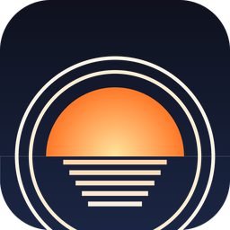
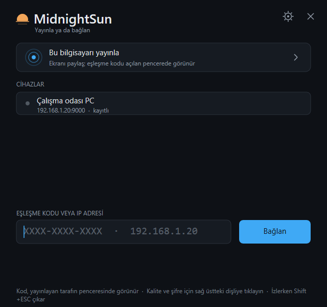
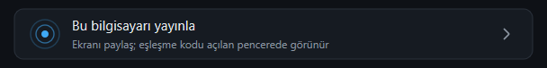
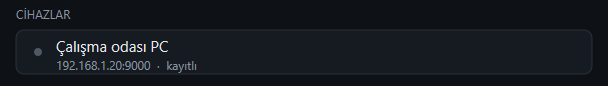
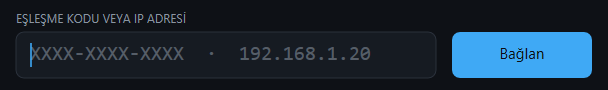
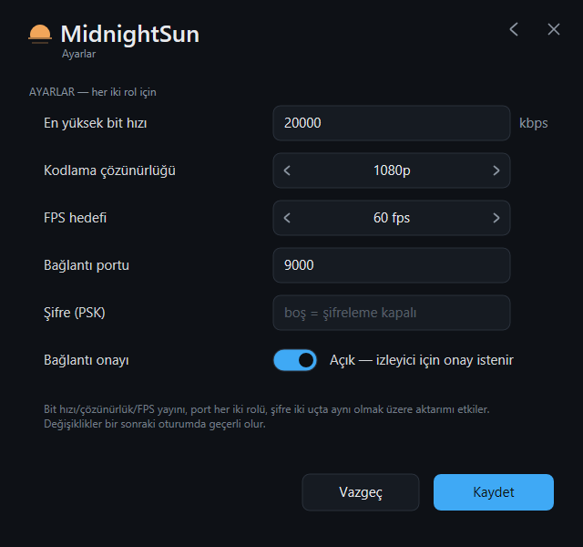

Kurulum paketi · önerilen
MidnightSun-Kurulum.exe
Başlat menüsü kısayolu, güvenlik duvarında uygulamaya özel izin (özel ağlar) ve kaldırıcı. Ayarlarınız güncellemede korunur.
Kurulum paketini indir
MidnightSun İndirMidnightSun, NVIDIA ekran kartlı Windows PC'nizdeki oyunu evdeki başka bir bilgisayardan düşük gecikmeyle oynatır. IP yazmak yok, hesap yok, bulut yok.

Aynı MidnightSun.exe hem yayıncı hem izleyici. Rolü her oturumda açılış ekranından seçersiniz.
Oyun bilgisayarında MidnightSun'ı açıp karta tıklayın. Açılan durum penceresinde eşleşme kodu görünür; tıklayınca kopyalanır.

Aynı ağdaysanız yayın listede kendiliğinden belirir. Farklı bir ağ segmentindeyseniz XXXX-XXXX-XXXX kodunu girip Bağlan'a basın.


Yayıncı tarafta “bu yayını izlemek istiyor” istemi çıkar: İzin ver ya da Reddet. Kimin izleyeceğine siz karar verirsiniz.
Görüntü GPU belleğinden hiç çıkmadan sıkıştırılır ve oyun yayını için yazılmış bir UDP protokolüyle karşıya akar. Kaynak kodda adım adım:
DXGI Desktop Duplication masaüstünü GPU dokusu olarak alır; üçlü tampon, işlemciye kopya yok.
ScreenCapture.cppNVENC H.264 dokuyu doğrudan VRAM'den okur. Tek karelik VBV, intra-refresh, uyarlanabilir bit hızı.
NvencEncoder.cppGSMR: en fazla 1400 baytlık UDP paketleri. Paket kaybolursa izleyici anahtar kare ister, görüntü kendini onarır.
StreamSender.cpp · NetworkProtocol.hİzleyici parçaları birleştirir, donanımla çözer (D3D11VA) ve kenarlıksız tam ekranda gösterir.
StreamReceiver.cpp · VideoDecoder.cppKlavye, fare ve oyun kolu saniyede 120 kez yayıncıya döner; ses Opus ile 20 ms'lik dilimlerle ileri akar.
InputCapture.cpp · AudioCapture.cpp
Aynı ağda otomatik keşif. Uzaktakiler için tek satırlık kod: IPv4 adresi, port ve sağlama baytı, XXXX-XXXX-XXXX biçiminde.
Yeni izleyiciyi yayıncı onaylar. İki uca aynı şifre (PSK) girilirse tüm trafik AES-256-GCM ile şifrelenir ve doğrulanır.
256 tuşlu klavye, 5 tuşlu fare, mutlak ve göreli fare modu. XInput oyun kolu yayıncıda sanal Xbox 360 kolu olarak görünür (ViGEmBus ile).
Kayıpta anahtar kare, sessiz bozulmaya karşı intra-refresh. Ağ daralınca bit hızı iner, düzelince yeniden çıkar.
Bit hızı, çözünürlük, FPS, port, şifre ve onay tek ekranda. JSON dosyası açmanız gerekmez.
Yayın yalnızca seçtiğiniz cihaza akar; aracı sunucu ve telemetri yoktur. Yayın penceresi sistem tepsisine küçülür.
Yayını NVIDIA ekran kartı üretir; izleyen taraf için H.264 çözebilen herhangi bir GPU yeterli.
| Gereksinim | Yayıncı PC | İzleyici PC |
|---|---|---|
| İşletim sistemi | Windows 10/11 x64 | Windows 10/11 x64 |
| Ekran kartı | NVENC destekli NVIDIA (GTX 10xx ve üzeri), sürücü 522.25 veya yenisi | H.264 çözebilen herhangi bir GPU |
| Ağ | Gigabit kablolu ağ veya Wi-Fi 5 ve üzeri önerilir | Aynı |
| İsteğe bağlı | ViGEmBus sürücüsü (oyun kolu için) | gerekmez |
Sürüm 1.0.0. Bu paket hazırlanırken kaynak koddan temiz derleme ve uygulamanın açılışı doğrulandı. Gecikme ölçümü yayımlanmadı: sonuç ağınıza ve donanımınıza bağlıdır. Ayrıntılar README'de; sorunları GitHub Issues'a yazabilirsiniz.
build_all.bat.Aynı ağda, VPN (Tailscale, WireGuard vb.) üzerinden veya port yönlendirmesiyle çalışır. Aracı sunucu yoktur; eşleşme kodu yalnızca bir adres taşır, veriniz üçüncü bir tarafa uğramaz.
Yayıncıda NVENC destekli bir NVIDIA kartı (GTX 10 serisi ve üzeri, sürücü 522.25 veya yenisi). İzleyici tarafında H.264 çözebilen herhangi bir GPU.
Hayır. MidnightSun ücretsizdir; kendi kaynak kodu MIT lisanslıdır. İçindeki Opus ve ViGEmClient kendi lisanslarıyla gelir.
Yayın yalnızca onayladığınız cihaza akar. İki uca aynı şifreyi girerseniz trafik AES-256-GCM ile şifrelenir. Hesap, telemetri ve bulut yoktur. Şifre statik olduğundan internet üzerinden kullanımda VPN önerilir.
Kol girişini yayıncıya aktarmak için yayıncı PC'de ViGEmBus sürücüsü kurulu olmalı. Sürücü yoksa uygulama klavye ve fareyle devam eder.